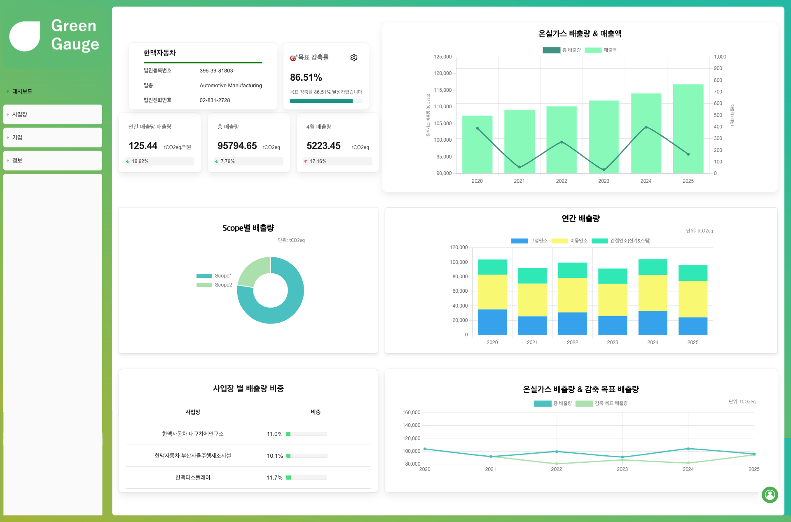
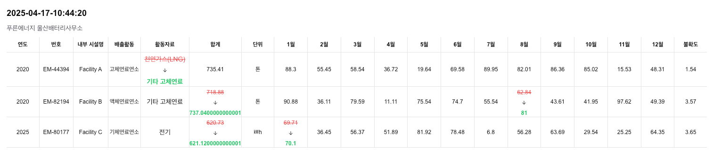

ESG 배출 데이터 대시보드
Project Description
ESG 배출량 데이터를 기업·사업장 단위로 관리하고, 계산 결과와 수정 이력을 함께 추적할 수 있는 ESG 대시보드 서비스입니다.
Key Features
- 기업·사업장 단위의 배출량 데이터 관리 및 조회
- Scope(1/2/3) 기준 배출량 계산 및 시각화
- 배출 데이터 일괄 입력·수정 지원
- 배출량 수정 이력 추적을 통한 데이터 신뢰성 확보
- 대시보드 기반의 배출 현황 요약 제공


My Contribution
Backend
- 서비스 전반의 백엔드 개발 주도
- 기업·사업장·배출 데이터·계산·수정 이력에 대한 DB 설계
- 배출량 계산 로직 및 관련 API 구현
- 배출 데이터 수정 시 원본과 이력을 함께 관리하는 API 설계
Frontend
- Handsontable 기반 배출 데이터 입력·편집 화면 구현
- Chakra UI를 활용한 메인·대시보드·기업·사업장 페이지 개발
- Chart.js를 이용한 Scope별 배출량 시각화
Challenge 1: 배출 데이터 수정 내역 문제
Problem
배출 데이터가 반복적으로 수정되지만, 누가·언제·무엇을 변경했는지를 추적할 수 있는 구조가 없어 책임 소재와 감사 대응이 어려웠다. 또한 잦은 수정 과정에서 원본 데이터와 대시보드의 계산 결과 사이에 정합성 불일치가 발생할 위험이 있었다.
Approach
배출 데이터를 원본 데이터와 수정 이력으로 분리된 구조로 재설계하고, 모든 수정 요청 시 변경 전/후 값, 사용자, 시점을 기록하도록 API를 구현했다. 수정 이후에는 배출량 재계산 로직을 자동으로 호출해 원본 데이터, 이력, 대시보드 값이 일관되게 유지되도록 처리 흐름을 구성했다.
Result
수정 내역을 명확하게 추적할 수 있는 구조가 확보되어 데이터 신뢰성이 향상되었다. 원본·계산·시각화 결과가 일관되게 유지되어 검증과 감사 대응이 가능한 수준의 데이터 품질을 달성했다.
Challenge 2: 대용량 테이블 입력 + 계산 구조화
Problem
Handsontable 기반의 엑셀 형태 입력을 통해 대량의 배출 데이터를 처리해야 했고, 이를 바탕으로 Scope1·2·3 배출량 계산이 이루어져야 했다. 셀 단위로 서버를 호출하거나 프론트에서 계산을 수행할 경우 API 호출 과다, 계산 로직 중복, 데이터 조작 가능성, 성능 저하 문제가 발생할 가능성이 있었다.
Approach
프론트는 데이터 입력과 수정만 담당하도록 역할을 분리하고, 변경된 행만 모아 한 번에 전송하는 Bulk 저장 방식으로 API를 설계했다. 서버에서는 저장된 데이터를 기준으로 일괄 계산 로직을 수행하며, 계산된 결과는 별도의 조회·집계 API에서 사용되도록 입력–계산–조회 단계를 구조적으로 분리했다.
Result
대량 입력 환경에서도 안정적으로 저장·계산 처리가 가능해졌고, API 호출 수 감소로 성능이 개선되었다. 계산 책임을 서버로 일원화하여 로직 일관성과 데이터 신뢰성을 확보했으며, 대시보드는 집계된 데이터만 조회해 빠르게 렌더링되는 구조가 완성되었다.

종목 관계 그래프 예시